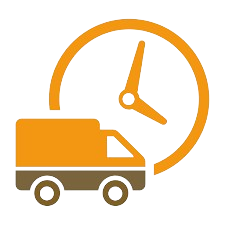
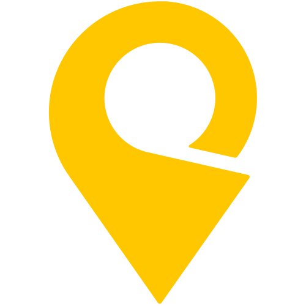
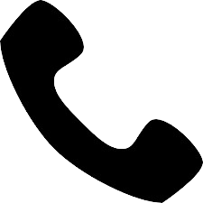

Додаткові послуги
Шановні клієнти,
Ми хочемо, щоб ваша покупка велосипеда або мотоцикла була максимально приємною і комфортною. Саме тому ми пропонуємо широкий спектр додаткових послуг, які допоможуть вам зробити правильний вибір і підтримувати свій транспортний засіб у справному стані. Тест-драйв
Ми пропонуємо тест-драйв велосипедів і мотоциклів у нашому магазині або на місцевій трасі. Це дозволить вам відчути різницю між різними моделями і знайти ту, яка найкраще відповідає вашим потребам.Обслуговування та ремонт.
Велосипеди: 500 грн.
Мотоцикли: 1500 грн (без урахування палива).
Тривалість тест-драйву - 20 хвилин.
Ми пропонуємо послуги з обслуговування та ремонту велосипедів і мотоциклів. Це допоможе вам підтримувати свій транспортний засіб у хорошому стані і продовжити його термін служби. При покупці на всі товари діє гаранія 1 рік.
Додаткова гарантія на велосипед (терміном на 1 рік) - 1000 грн.
Додаткова гарантія на мотоцикл (терміном на 1 рік) - 5000 грн.
Доставка і оплата

Доставка:
Нова Пошта(всі види товарів) - по тарифам перевізника
Укрпошта(лише велосипеди) - доставка безкоштовна.
Оплата: картою, готівкою(при доставці "Новою Поштою").

Контакти

Наша адреса: м. Харків, вулиця Героїв України, 138/5
Наша пошта: bike_shop@urkrmail.com
Наш телефон: +380917757781
Графік роботи кол-центру: 10:00-16:00, без вихідних.
Графік роботи офлайн-магазину: 9:00-18:00, без вихідних.
Чекаємо на вас!
Про нас
Велосипеди і мотоцикли - це більше, ніж просто транспортні засоби. Це спосіб життя, який дарує свободу і задоволення.
Ми, команда магазину "BikeShop", розуміємо це. Ми любимо велосипеди і мотоцикли, і ми хочемо, щоб ви теж їх полюбили.
Ми пропонуємо широкий вибір велосипедів і мотоциклів для будь-якого бюджету і стилю життя. У нас є дорослі велосипеди для прогулянок, спорту, туризму, дитячі велосипеди, а також мотоцикли для міста, подорожей і екстриму.
Ми також пропонуємо широкий спектр додаткових послуг, які зроблять вашу покупку ще приємнішою. Ми пропонуємо тест-драйв, щоб ви могли відчути різницю між різними моделями і знайти ту, яка найкраще відповідає вашим потребам. У нас також є широкий вибір запасних частин і аксесуарів, а також послуги з обслуговування та ремонту.
Ми ощасливили понад 5 тисяч покупців.
Ми - ваші друзі в світі велосипедів і мотоциклів. Ми будемо раді допомогти вам знайти ідеальний велосипед або мотоцикл для ваших потреб. Завжди раді допомогти, щоб Ви отримали найкращі емоції! Чекаємо на Вас!